Borderlands es una saga de juegos desarrollado por Gearbox Software, de tipo "rol de acción". Puedes escoger a varios buscacámaras con los que jugar para subir nivel y mejorar el árbol de habilidades.
En el equipamiento del personaje va de 2 a 4 armas, un escudo protector, una modificación de granada y un modificador de clase que te va a aportar habilidades extras.
EL algoritmo de creación que da soporte a una estimación de mil millones de armas, es llamado "Procedural Content Creation System" (Sistema de creación de contenido procedural), este sistema genera armas y objetos variando sus habilidades, poder de siparo, cadencia, precisión, añade también efectos elementales (fuego, electricidad, corrosión, explosión, slug o incluso regenerar munición). También aporta un sistema de colores para indicar la rareza del armas.
Sumérgete en este universo, y disfruta de una experiencia de loot, disparos, explosiones y con un toque de humor absurdo único.
Personajes
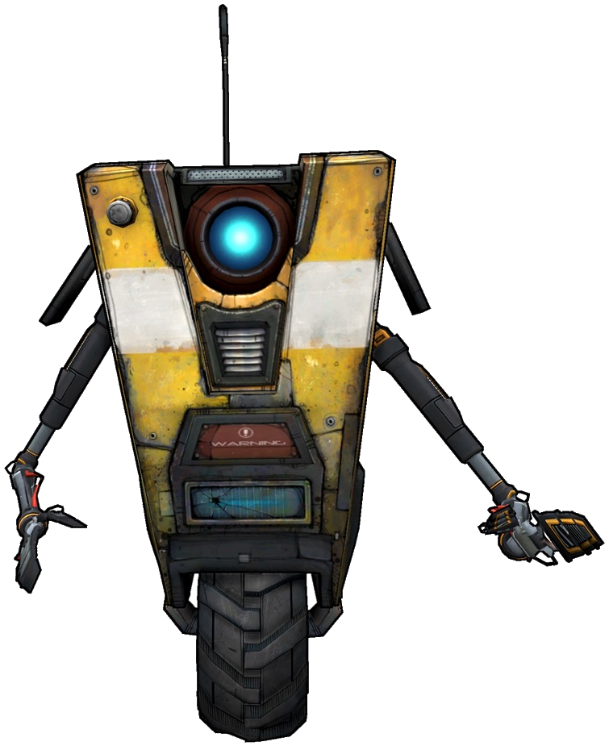
Claptrap
Tina
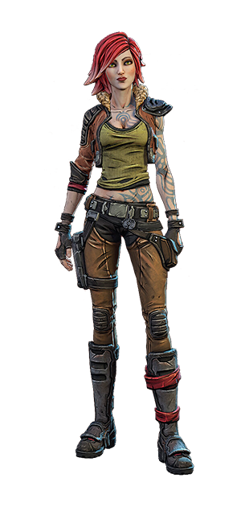
Lilith
Maya
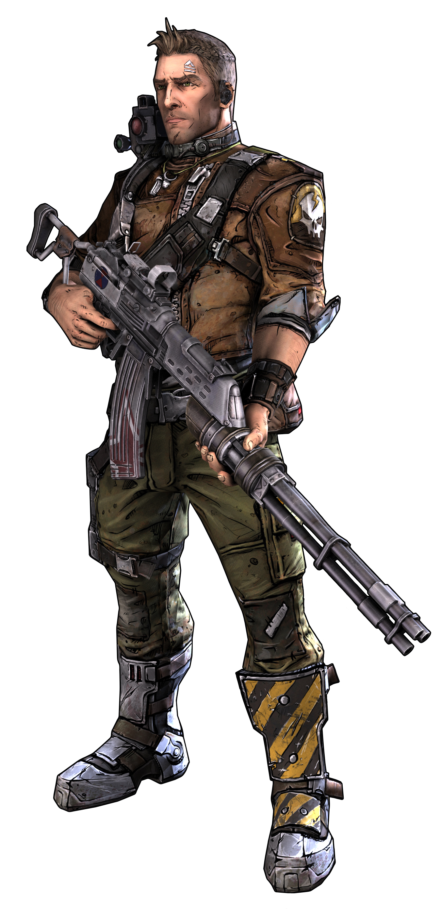
Axton
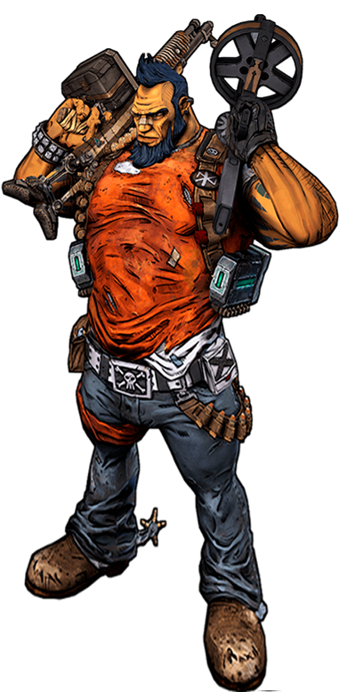
Salvador
Amara
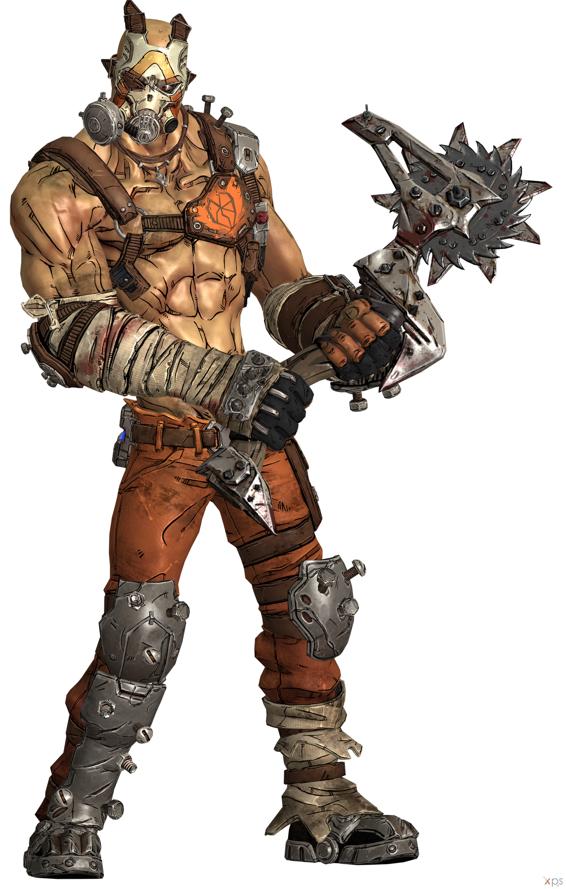
Krieg
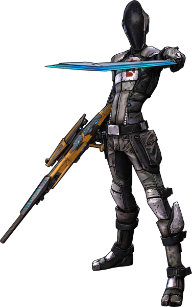
Zero
Zane
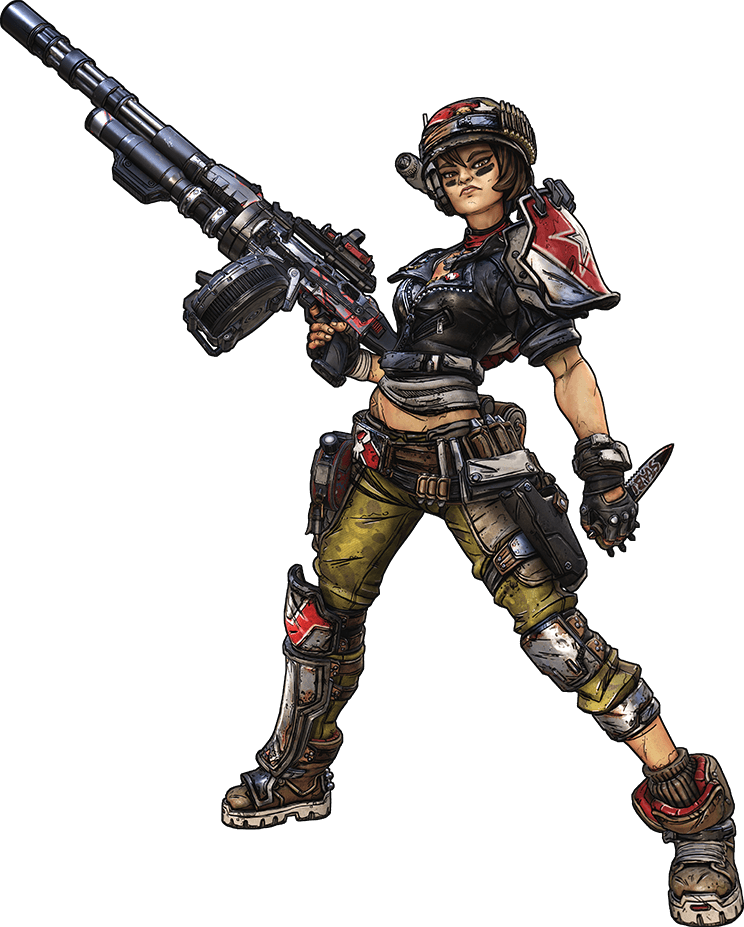
Moze
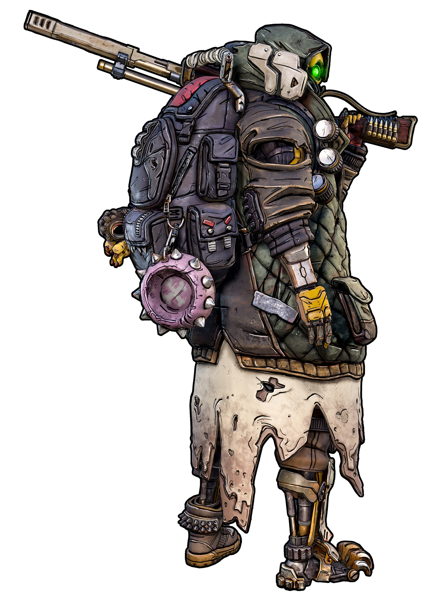
Fl4k
Fabricantes de armas
Vamos a hablar de los fabricantes de armas. Entre las armas podemos distinguir entre pistolas,subfusiles, fusiles de asalto, rifles de francotirador, escopetas, lanzacohetes, entre otros... Además al tipología y las características concretas del arma depende del fabricante y de si aporta o no daño elemental (Ígneo, Criogénico, Eléctrico, Radioactivo y Corrosivo).
Armas legendarias más raras.
Nombre
Daño
Capacidad
Precisión
Características
Ejemplos
Medio-bajo
Media-alta
Baja
Basadas en armas militares y disparo de ráfaga
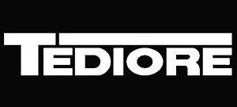
Medio-alto
Media
Media-alta
Armas desechables, que al recargar, dañan de diversas maneras al enemigo
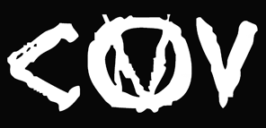
Medio-alto
Ilimitado
Baja
Tiene balas infinitas pero se recarga por sobrecalentamiento
Medio-bajo
Alta
Media-alta
Alta tecnología, y usa el daño elemental
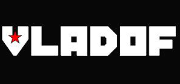
Medio-alto
Media-baja
Baja
La cadencia aumenta de manera progresiva
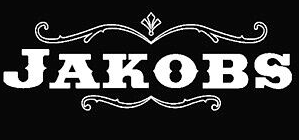
Alto
Baja
Alta
Estan inspiradas en armas del Viejo Oeste, suelen tener cargador de revolver.
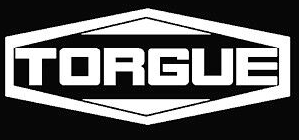
Alto
Media-baja
Baja
Los proyectiles que dispara son explosivos, causando un alto daño
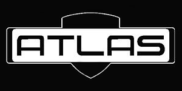
Medio
Media
Media-alta
Medio
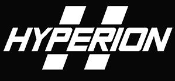
Medio-alto
Media
Alta
Alta tecnología de la compañia de Jack El Guapo
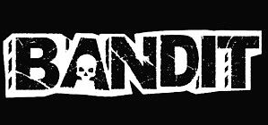
Bajo
Media
Baja
Creadas con piezas improvisadas
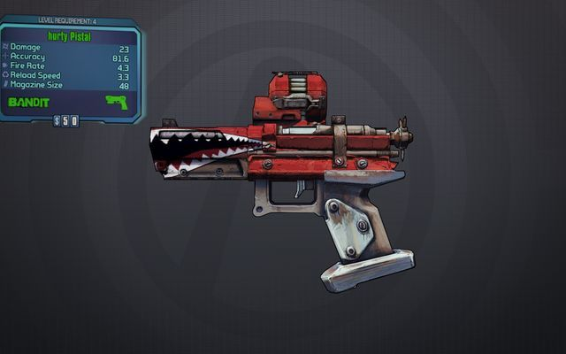
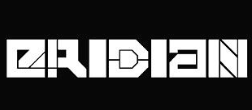
Alto
No necesita munición
Baja
Antigua tecnología alienígena
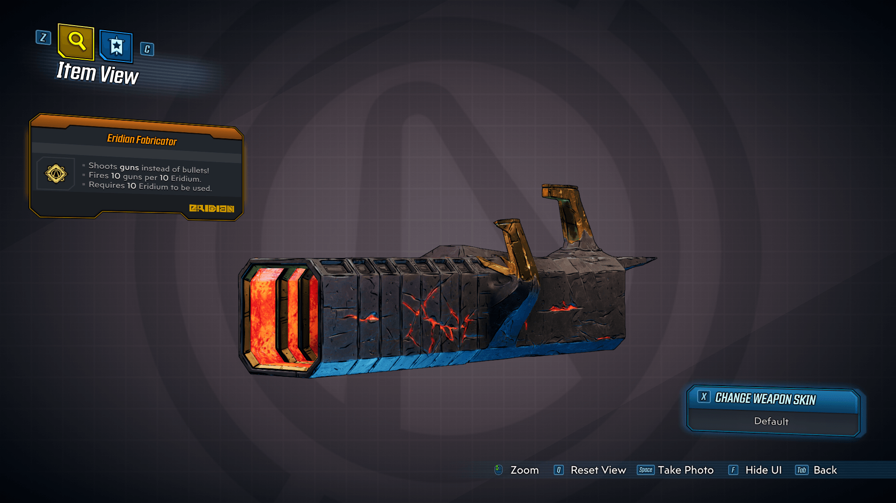
Armas iniciales u ocultas en el juego, 10 en total
No son muy reconocidas por sus características
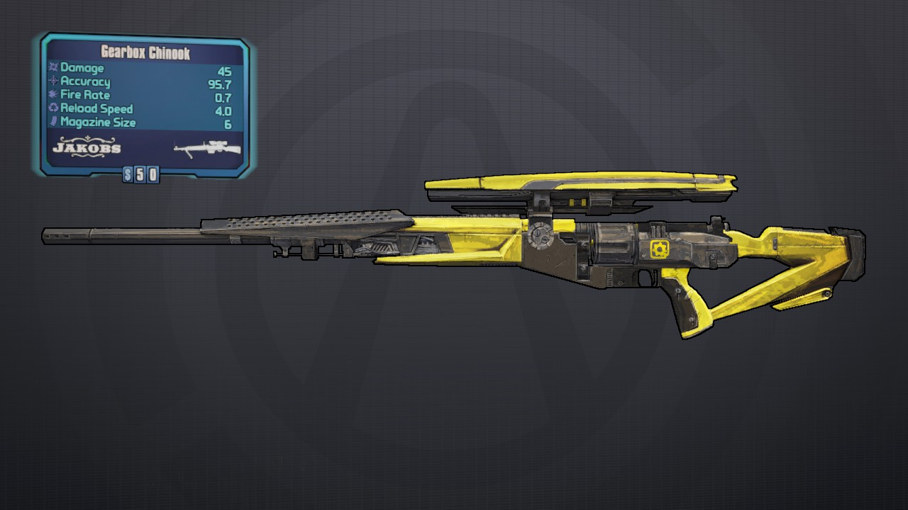
Contexto
Borderlands es una saga de juegos de "rol de accion", un shooter de primera persona muy frenético con una experiencia de looteo descomunal.
Se desarrolla en un planeta llamado Pandora, en el que por su riqueza en minerales se desata una invasión de la corporación DAHL y una guerra entre las diferentes compañias,
Al inicio debes escoger entre diferentes "buscadores de cámaras" cada uno con sus habilidades especiales únicas y con predilección hacia ciertas armas:
Borderlands
Roland El Soldado
Brick El Berserker
Lilith la Sirena
Mordecai el Cazador
Borderlands 2
Maya
Axton
Salvador
Zero
Borderlands 3
Amara
Moze
Fl4k
Zane
Una vez iniciada la historia deberás ir avanzando y obteniendo puntos de habilidad que te permitiran mejorar 3-4 ramas de habilidades en función del juego que te proporcionarán en muchos casos una gran ventaja.
Se comienza con dos armas y conforme se avanza se va progresando se va desbloqueando hueco para dos armas más en el inventario, granadas, escudos y modificadores de clase.
En borderlands 2 hay un villano principal que es Jack El Guapo, enlazado en la historia con Tales of Borderlands (Una presecuela), mientras que en Borderlans 3 existen dos villanos principales Los Gemelos Calypso, Tyreen y Troy.
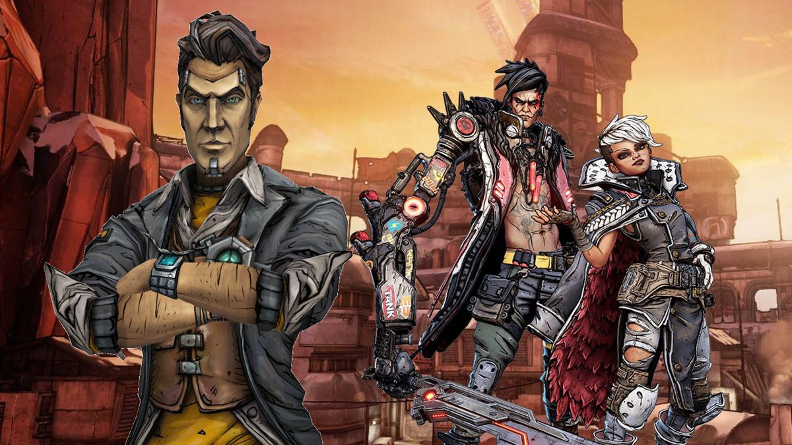
Jack El Guapo, junto a los gemelos Calypso, Tyreen y Troy.
Borderlands incluye cuatro clases de personajes, cada una con sus propias habilidades e historias personales. Según un personaje va ganando experiencia y va subiendo de nivel, sus estadísticas básicas (tales como el total de salud o su precisión) aumentan. Cada clase dispone, además, de tres arboles de habilidades únicas para desarrollar. Hay además un accesorio específico para cada clase.
Pero podemos distinguirlos en cuatro tipos:
Tipo Berserker: armas de corto medio-alcance, con bastante vida pero sin tanta precisión o capacidad de críticos.
Tipo Sirena: Las sirenas poseen muchas habilidades, pueden elevar objetos y enemigos y reducirlos a cenizas, son bastante resistentes y poseen un escudo de fuerza, a su vez hacen bastante daño y te proporciona una experiencia bastante divertida y caótica.
Tipo Agente: Poseen habilidades más técnicas, y tienen bastante vida con una jugabilidad bastante bunea.
Tipo Especialista: Poseen poca vida, pero con habilidades de cazador para un modo más sigiloso y decantandose por las francotiradores.
Planetas
En el universo de Borderlands hay una gran cantidad de planetas, siendo pandora su principal, y cada uno con su propia fauna y sus enemigos.
Cada planeta está medio ambientado a las diferentes compañias de armamento, que mediante los cofres te tocará más frecuentemente un arma de la compañia de ese planeta. Por ejemplo, en el planeta Eden-6 es donde sale la compañia Jakobs.
Cada planeta se compone de mapas semiabiertos fraccionados en los que se pueden explorar a libremente dentro de sus límites.
Recogerás botín, explorarás áreas y completarás misiones, luchando contra una gran cantidad de criaturas peligrosas en el camino. Cada planeta alberga nuevas amenazas y su propia biosfera única, así que espere mucha variación en el juego. Los Hijos de la Bóveda y sus líderes Troy y Tyreen han estado ocupados reclutando nuevos fans e infiltrándose en los planetas para construir su ejército de adoradores de bandidos.
Promethea
Promethea es una metrópolis construida de torres de gran altura futuristas y la sede de la corporación Atlas. Ahora es un campo de batalla para un asedio de Maliwan: el cielo se ilumina con cohetes, rayos y disparos, mientras los altos edificios grises arden en la noche y el humo invade las grietas de la ciudad.
Posee los siguientes mapas: Afuera de Meridian,Meridian Metroplex, Ciudad de Lectra, Skywell-27, Atlas HQ, Arterial de neón, La basílica olvidada y Cisterna de la matanza.
Un combate contra enemigos
Pandora
Una vista familiar de huesos desnudos y rocas polvorientas que se hunden en el vasto desierto dorado. Hogar de vida salvaje hostil, poblado por diatribas de bandidos bárbaros que se mueven en sus todoterrenos mejorados. Las ruinas mecánicas y los fragmentos de recursos metálicos dispersan a Pandora, al igual que Skags, Rakk, Varkids y Spiderants.
Sus mapas son: Pase del pacto, Las sequías, Ascension Bluff, Navaja del diablo, Las Splinterlands, Carnivora yTripas de Carnivora.
Eden-6
Hogar del clan Jakobs, Eden-6 está cubierto por millas de pantanos y vegetación imponente, que esconde todo tipo de criaturas, como Jabbers semi-sensibles y saurianos sedientos de sangre. Hay peligros acechando en las aguas pantanosas de este planeta incivilizado, donde los Hijos de la Bóveda se aprovechan de nuevos reclutas.
Está compuesto por: Cuenca de Floodmoor, El yunque, Finca Jakobs, Dosel voraz, Ambermire, Bodegas de barril negro y La tumba flotante.
Atenas
Un planeta que alguna vez fue pacífico, hogar de la Orden de la Tormenta Inminente, una secta de monjes que habitan las altas cumbres. Un lugar secreto, con una pequeña población que reside en los templos antiguos escondidos en las montañas.
Está formado por Plaza Stormhaven, El Remordimiento de Dido y el anclaje
Respecto a los enemigos y fauna, el sistema automatico de armas en Borderlands es similar para crear enemigos. En La Isla Zombie del Dr. Ned se introducen varias nuevas creaturas de la noche en el juego, bajo el termino de "zombi", en La Armada del General Knoxx, veremos nuevos modalidades de Crimson Lance, asi como critaturas nuevas y algunos variantes de los mismos enemigos.En Claptrap's New Robot Revolution se reintroducen los Claptraps como los nuevos enemigos, ademas de humanos convertidos en cyborgs, nueva fauna ademas de Claptraps mejorados.
Entre gritos y disparos tenemos la oportunidad de ir viendo algunos de los enemigos de Borderlands 3. Monstruos que repiten de anteriores entregas (como los skag o los rakk), nuevas y letales criaturas, así como variantes de los de toda la vida que han sido afectados por algún elemento como la electricidad o la radioactividad (nueva en la serie).
Cada uno de los enemigos tienen diversas formas e incluso pueden evolucionar a cabronazos, supercabronazos y más.
DLC's y extensibles
En Borderlands disponemos de varios DLC's, los siguientes son los pertenecientes al Borderlands 2:
The Zombie Island of Dr. Ned, La historia toma lugar en un área conocida como "Jakobs Cove", que es un pequeño pueblo construido por la Corporación Jakobs. El doctor Ned, encargado de mantener a los obreros de la isla con vida, se le va un poco la mano, creando zombis y todo tipo de horrorosas abominaciones que andan sueltas por la región. La trama principal gira en torno a encontrar los visitantes anteriores a Jakobs Cove e investigar al propio Dr. Ned después de que la Corporación Jakobs empezara a sospechar de su obra. Los jugadores tendrán que ayudar al Dr. Ned embarcándose en una peligrosa aventura para curar a los putrefactos habitantes de Jakob's Cove. El área incluye un mapa jugable grande al aire libre con varias áreas más ramificado desde la zona principal, incluida una oscura abandonada versión de la zona anterior 'Old Haven'11 La serie fue lanzada para la Xbox 360 (por 800 puntos Microsoft) y PlayStation 3 el 24 de noviembre de 2009, que se celebró con un remolque. La versión para PC fue lanzado a través de Steam con SecuROM el 9 de diciembre de 2009.
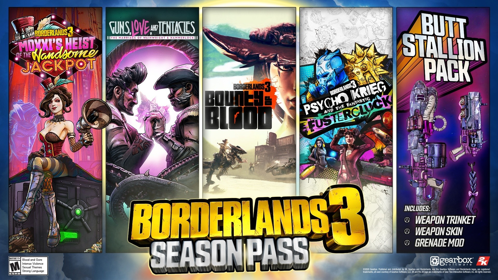
Los DLC's pertenecientes al Borderlands 3
El torneo de Moxxi (una perturbada que desposa maridos a los que más tarde obligará a participar en torneos a los que difícilmente sobrevivirán) consiste en tres coliseos diferentes, Hell-burbia (Infierno-burbia), The Angelic Ruins (Las Ruinas Angelicales) y The Gully (el barranco). Aunque la apariencia de cada zona es distinta, tendremos que hacer básicamente lo mismo en cada coliseo: sobrevivir. Lo que no es tan fácil como podría parecer, ya que cada uno de los asaltos consta, a su vez, de cinco oleadas breves. La primera oleada, designada como “Starter Wave”, u “ola inicial” es simplemente un calentamiento, nos bastará para hacernos con la mecánica de juego: un grupo de maníacos enemigos se abalanzará sobre nosotros, y tendremos que arreglárnoslas para salir indemnes de sus ataques. En la siguiente oleada a la que nos enfrentemos, conocida como “Horde Wave” tendremos que hacer frente a una horda equipada con armas de combate .cuerpo a cuerpo, como mazas o porras Seguidamente, la “Badass Wave”, u “oleda de malotes”, agrupará un conjunto de enemigos con mayor poder, más escudos y armas más dañinas.
Finalmente, en la “Boss Wave”, u oleada de jefe, tendremos que superar el ataque de un jefe final, que no aparecerá solo, sino que contará con la ayuda inestimable de sus esbirros, que ayudarán a ponernos las cosas más difíciles, por si no resultaba suficiente con todos los demás oponentes y obstáculos. Gradualmente, pues, se nos irán complicando las cosas, por lo que conviene no arriesgar la integridad física de nuestro personaje imprudentemente.
El arsenal secreto del general Knoxx se anunció extraoficialmente el 21 de enero de 2010, a través de los foros oficiales de Gearbox, publicada por Jason Reiss diseñador en Gearbox quien dijo que con el paquete se incrementará el límite de nivel a nivel 61, y que es "el más grande de DLC que hemos hecho". A Twitter por el director creativo de Gearbox Mike Neumann el 21 de enero de 2010, dijo que el paquete también incluiría "a Scooter", que es un personaje en el juego. Esto fue seguido por un anuncio oficial de la caja de cambios a través de Gearboxity el 29 de enero de 2010, confirmando la liberación, el aumento del nivel máximo, marca nuevas armas, y las "brutales enemigos, nunca antes visto en un gran nuevo entorno completo con un montón de nuevas misiones de la marca", según Gearbox, desarrollador del juego . La trama de este DLC gira en torno a Athena, un agente corrupto de Atlas que se auto describen como la mejor, una mujer enferma de Atlas de mentiras que quiere llevar a sus rodillas, y el General Knoxx (superior de Steele), un hombre con odio extremo por su trabajo hasta el punto de, literalmente, odiando su vida, que tiene la tarea de destruir a Athena y el protagonista (s). En el camino también se encuentra con Moxxi que ayuda al jugador a tomar en Atlas también (si usted ayuda a su cara por su exmarido) y Scooter, que revela que se relaciona con Moxxi.
Este DLC está compuesto por 21 misiones (divididas en 9 misiones principales y 12 secundarias), y aumentaría 10 puntos de habilidad. El juego se centrara en un ejército de Clap-Traps defectuosos (capitaneados por CL4P-TP, un Ninja Asesino Interplanetario, el mismo claptrap que se ve arrollado por una luz al final de los créditos), además de un ejército de enemigos familiares transformados en robots del estilo de Clap-Trap (por ejemplo, Crab-Traps, Rakk-Traps y Skag-Traps). Varios de los personajes secundarios volverán junto con nuevos personajes.